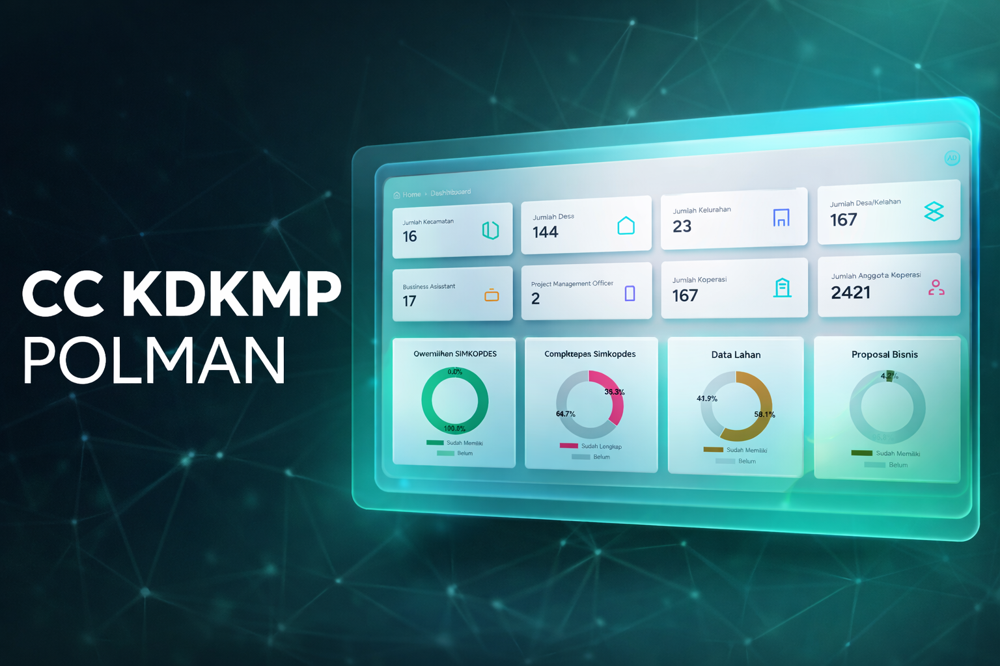
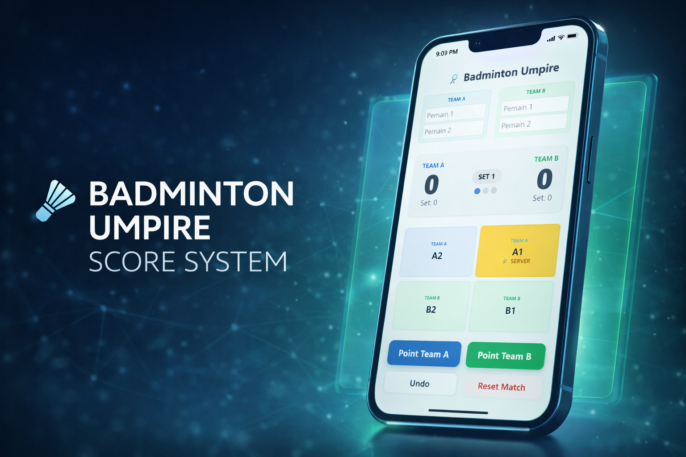

Technical Mastery
Technical
Software
OS
Pengalaman
Okt 2025 - Des 2025
Project Management Officer
Kementerian Koperasi Lihat Timeline
- Mengkoordinasikan dan memantau pelaksanaan program Koperasi Merah Putih di tingkat desa dan kecamatan.
- Merancang dan mengembangkan sistem pelaporan serta monitoring Koperasi Merah Putih tingkat kabupaten, sebagai alat kontrol progres, transparansi data, dan evaluasi kinerja koperasi.
- Mengolah, menganalisis, dan menyajikan data capaian koperasi ke dalam laporan berkala sebagai bahan pengambilan keputusan dan perumusan kebijakan.
- Menjadi penghubung antara pengurus koperasi, pendamping lapangan, dan pemangku kepentingan, guna memastikan koordinasi, komunikasi, dan implementasi program berjalan efektif.
Mar 2025 - Ags 2025
Magenta : Staff of HC Operational
PT. Semen Tonasa Lihat Timeline
- Mengembangkan dan mengimplementasikan sistem Human Capital Information System (HCIS) untuk memudahkan pengelolaan data karyawan secara digital.
- Menerapkan solusi teknologi untuk meningkatkan efisiensi dan akurasi dalam proses pengelolaan data sumber daya manusia.
- Melakukan testing dan debugging website secara menyeluruh, menguatkan ketelitian dan kemampuan pemecahan masalah (problem-solving) dalam menemukan dan memperbaiki error.
Jan 2024 – Jun 2024
MBKM Desa Cemara
Kementrian PPN/BappenasLihat Timeline
- Mengikuti program kolaborasi nasional dalam rangka penanggulangan kemiskinan ekstrem di Sulawesi Barat, terkhusus di Desa Rea Kabupaten Polewali Mandar.
- Tahap pre-departure: mendapatkan pembekalan tentang analisis masalah sosial, birokrasi pemerintahan, perancangan program kerja, serta strategi implementasi dari dosen dan praktisi.
- Tahap lapangan: tinggal bersama masyarakat selama 2 bulan untuk mengimplementasikan program kerja yang telah dirancang.
- Berhasil melaksanakan program pendampingan masyarakat dalam produksi gula semut, mulai dari pelatihan, pendampingan, hingga pemasaran produk bersama petani lokal.
Ags 2023 – Des 2023
MSIB Batch 5 : Web Developer Intern
PT. Hadji KallaLihat Timeline
- Berperan sebagai Backend Developer dengan tanggung jawab utama dalam membangun RESTful API serta merancang alur pengolahan dan penyimpanan data.
- Mengembangkan replika Human Capital Information System (HCIS) PT. Hadji Kalla untuk kebutuhan internal pembelajaran dan pengujian sistem.
- Merancang dan mengimplementasikan fitur FAQ interaktif pada website HCIS yang memudahkan karyawan dalam mengakses informasi, sehingga meningkatkan efisiensi pencarian informasi internal.
Feb 2023 – Mei 2023
KPI : Web Developer Intern
Fakultas Teknik, UNSULBARLihat Timeline
- Merancang dan mengembangkan fitur aplikasi magang berbasis web untuk memfasilitasi pendaftaran dan pengelolaan data mahasiswa.
- Membuat dan mengoptimalkan database untuk menyimpan informasi mahasiswa, perusahaan mitra, dan laporan magang secara efisien.
- Melakukan pengujian aplikasi untuk mengidentifikasi dan memperbaiki bug.
Sep 2022 – Feb 2023
Program Pertukaran Mahasiswa Merdeka 2
Universitas Amikom YogyakartaLihat Timeline
- Mengikuti Program Pertukaran Mahasiswa Merdeka 2 selama satu semester.
- Mengembangkan Sistem "Sislaundry dan Triasih" secara berkelompok
Ags 2021 – Okt 2021
KMMI: Pemasaran Digital
Kementerian Pendidikan, Kebudayaan, Riset, dan TeknologiLihat Timeline
- Terpilih sebagai peserta program nasional Kredensial Mikro Mahasiswa Indonesia (KMMI) bidang pemasaran digital.
- Mempelajari strategi pemasaran digital mencakup SEO, social media marketing, content marketing, dan digital advertising.
- Mengembangkan keterampilan praktis dalam merancang strategi promosi online untuk mendukung pemasaran produk dan layanan.
HAKI
Hak Kekayaan Intelektual
Karya Ilmiah
Publikasi Penelitian
Sertifikasi & Lisensi
Proyek Pilihan
Implementasi solusi digital dan pengembangan sistem.

Command Center KDKMP POLMAN
Sistem pusat kendali digital untuk memantau, menganalisis, dan memvisualisasikan perkembangan Koperasi Desa/Kelurahan Merah Putih secara terpadu, akurat, dan berbasis data..
View Live Project
Badminton Score
Sistem skor wasit bulu tangkis digital yang menyediakan antarmuka pencatatan skor secara real-time dan jelas untuk mendukung perwasitan pertandingan yang adil dan efisien..
View Live ProjectPendidikan
2020 - 2024
S1 Teknik Informatika
Universitas Sulawesi Barat
- IPK 3.93/4.00
- Lulusan Terbaik Fakultas Teknik 2024
- Duta Favorit Unsulbar Teknik 2023
Organisasi & Lainnya
Koordinator Bidang Akademik
HMP Teknik Informatika
Mentor
Informatics Study Club